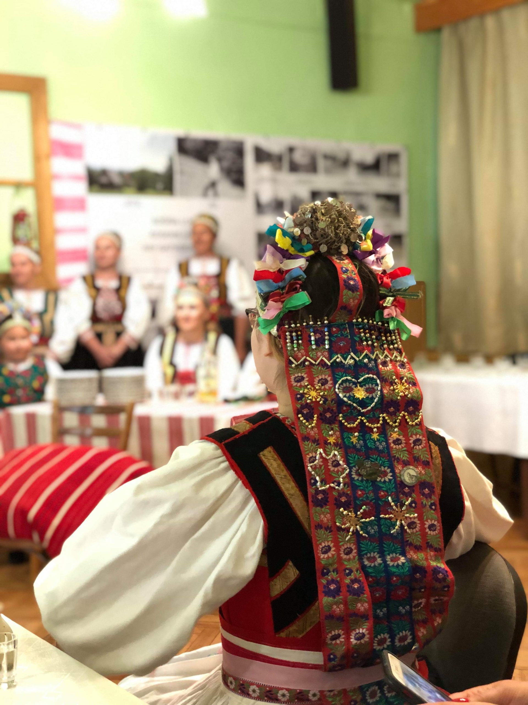
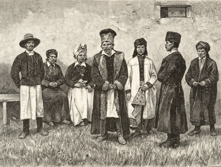
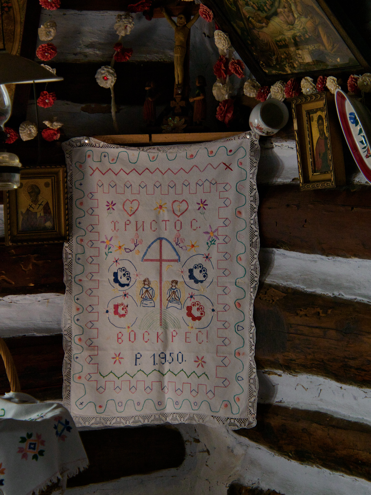
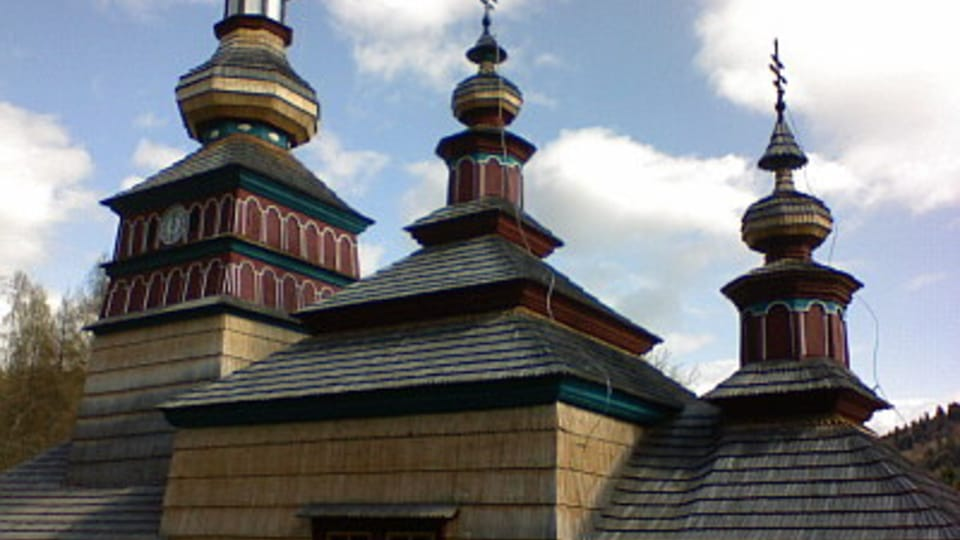

Blueprint for Change: Ruthenian and Rusyn Identity
Exploring cultural distinctiveness through digital public history
About the Project
This site highlights the unique cultural and historical identities of Ruthenians and Rusyns, communities often miscategorized as Ukrainian. Drawing on community engagement, academic sources, and digital storytelling, this project aims to educate and empower by clarifying identity distinctions and celebrating heritage.
Historical Timeline
Pre-1918: Ruthenians recognized in Austro-Hungarian Empire.
1918–1945: Identities split and contested in Polish, Czechoslovak, and Soviet territories.
Post-1945: Suppression under USSR; Russification and Ukrainization policies intensify.
Post-1991: Rusyn recognition in Slovakia and efforts toward cultural revival in the diaspora.
Interactive Migration Map
Migration Map
This interactive map visualizes major migration routes of Carpatho-Rusyn communities from Central Europe to North America.
Trace the movement of Rusyn and Ruthenian communities from the Carpathian region to Canada and the United States. This interactive feature will show key settlement hubs and oral histories linked to each point.
Archival Highlights
Digitized publications from the Carpatho-Ruthenica Collection (Thomas Fisher Rare Book Library).
Oral histories from descendants in Toronto and Pennsylvania (forthcoming).
Selections from the Carpatho-Rusyn Research Center and Society for Rusyn Evolution.
Photo Exhibit




Language & Identity Glossary
Term
Definition
Rusyn
Self-identified East Slavic group with distinct language and culture.
Ruthenian
Historical term used in Austro-Hungarian and Polish sources for Rusyn people.
Ukrainian
National identity that many Rusyns were reclassified under post-WWII.